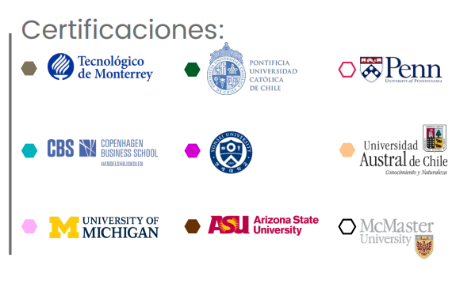

⚙️ Ingeniería Ejecutiva en Electrónica
Aplica EQ | Categoría: Ingeniería
📖 ¿De qué trata esta Ingeniería?
Forma ingenieros con conocimientos en electrónica de potencia, sistemas embebidos y control, capaces de diseñar, implementar y evaluar soluciones tecnológicas aplicadas a las energías renovables, automatización y electrónica avanzada.
📌 Detalles del Programa
- ⏳ Duración: 4 años (12 cuatrimestres).
- 🛡️ Modalidad: 100% en línea.
- Plataforma: Blackboard disponible 24/7.
- Clases: 1 a 2 sesiones semanales opcionales (grabadas).
- Soporte: Asistencia Lince 24/7 durante todo el año.
- Recursos: Biblioteca virtual, Office y herramientas tecnológicas.
🌟 Razones para Estudiar en UVM
- Doble Titulación: Opción de obtener título internacional con National Louis University (EE.UU.).
- Certificaciones Internacionales: Cursos integrados al plan avalados por Coursera y empresas líderes.
- Internacionalización: Viajes académicos, ciclos con expertos extranjeros y experiencias globales.
- Alta empleabilidad: 80% mejora su situación laboral al egresar (Ipsos/UVM 2020).
💼 Oportunidades Laborales
Podrás desarrollarte profesionalmente en industrias como:
- 📌 Electrónica de potencia: Diseño e implementación de sistemas de conversión y control de energía.
- 📌 Automatización y control: Integración de sistemas embebidos, sensores y programación avanzada.
- 📌 Manufactura y automotriz: Diseño y mantenimiento de sistemas electrónicos y robóticos.
- 📌 Energías renovables: Aplicación de tecnología para conversión, almacenamiento y eficiencia energética.
- 📌 Consultoría y desarrollo tecnológico: Soluciones innovadoras en hardware/software para distintas industrias.
🎓 Certificaciones Internacionales
🎯 Tips para Vender la Ingeniería
- 💡 "Ideal si te gusta la tecnología, la energía, los sistemas inteligentes y la automatización."
- 🔍 "Podrás trabajar con energías renovables, automatización industrial, electrónica avanzada y sistemas embebidos."
- 📌 "Es una ingeniería con fuerte demanda en sectores industriales, energéticos y tecnológicos."
🛑 Objeciones Comunes y Respuestas
- ❓ "¿Tengo que saber mucho de matemáticas o programación?"
✅ "No necesitas conocimientos previos. Aprenderás desde lo básico hasta lo avanzado paso a paso." - ❓ "¿Es confiable estudiar ingeniería en línea?"
✅ "Sí. El modelo está diseñado para aprendizaje práctico con herramientas digitales y acompañamiento constante." - ❓ "¿Qué certificaciones obtengo?"
✅ "Recibirás credenciales laborales con validez internacional desde Coursera y líderes del sector."